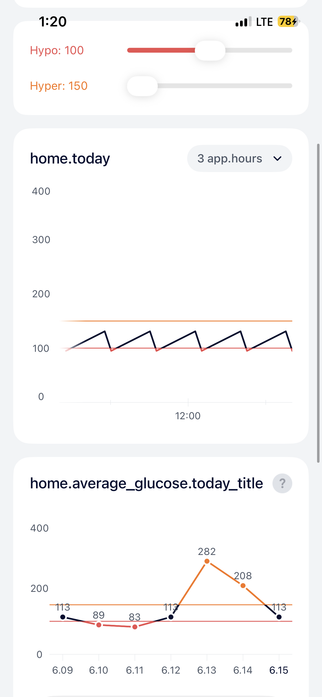
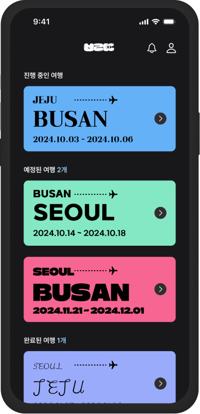
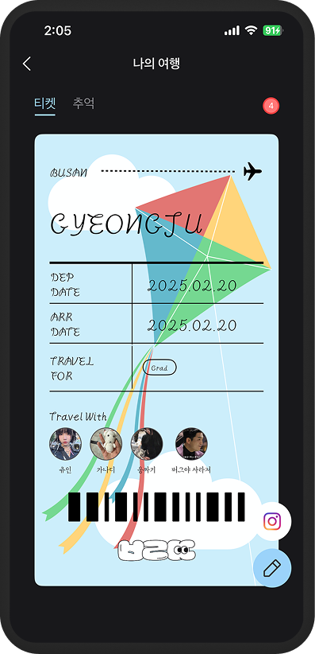
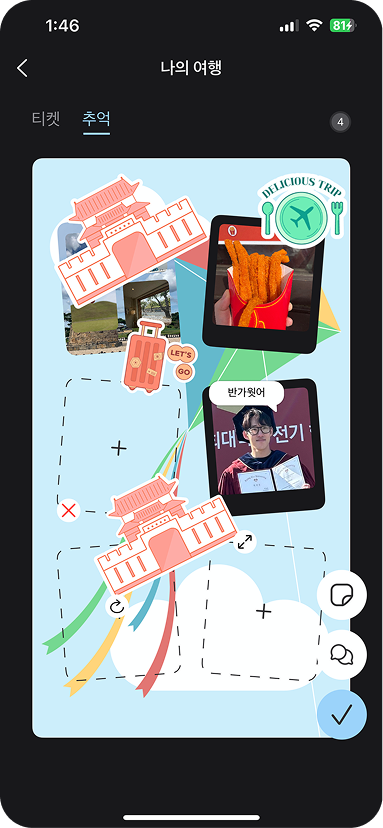
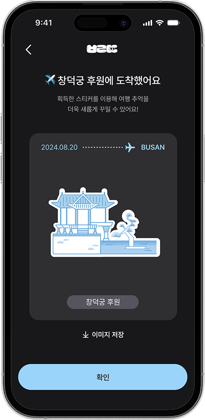
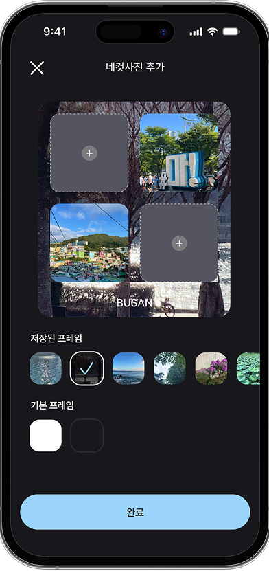

이선호 iOS Developer
팀이 되어 최고의 동료들과 협업하고,
사용자가 머무는 서비스를 만들고 싶은 개발자입니다.
BLE 센서에서 실시간 혈당 데이터를 수신·저장·시각화하는 의료기기 iOS 앱. 다국가 배포 대응(다국어·타임존).
.task가 뷰 형성에 의존해 Cold Start 시 BLE 연결이 누락되던 문제를, 초기화를 앱 생명주기(didFinishLaunching) 시점으로 옮겨 해결. iOS Pre-warming 동작도 로그 역추적으로 규명.invokeNext()가 큐에서 하나 꺼내 처리하고 자신을 다시 부른다. 상태 enum 없이 큐가 비면 끝, 남으면 진행 중.trigger()로 멈춘 체인을 되살린다.명시적 상태 enum 없이 큐의 존재/부재만으로 진행을 판단하는 self-driving 체인.
uniqueKey로 큐 진입 시점에 차단..task 타이밍 버그 해결View.task에 걸어뒀는데, .task는 뷰가 떠야 실행된다. 뷰 없이 프로세스만 깨어나는 경로(BLE State Restoration 등)에선 호출되지 않아 BLE 연결이 간헐적으로 누락됐다.applicationWillTerminate가 안 불려 로그조차 없었다.View.task → AppDelegate.didFinishLaunching으로 이전. 뷰 타이밍과 무관하게 launch마다 1회 보장. State Restoration은 더 이른 willFinishLaunching에서 선제 처리.ActivePrewarm·applicationState·launchOptions 조합으로 Launch 유형 5종(Cold / Background Cold / Background / Pre-warm / Warm Resume) 판정.didFinishLaunching까지 오지 않는다"를 확정 — Pre-warm 오판을 바로잡음.cleanExitFlag로 정상 종료 vs Jetsam 구분, launch마다 dead duration·발열 원격 수집.localizedUserNotificationString) — 언어를 바꿔도 현재 언어로 표시.@State shadow로 60fps 유지. 식사·운동 이벤트도 같은 Date 좌표계에 얹어 클러스터링 마커로 표시.endDate = now 고정 → 오른쪽 끝 항상 현재@State shadow → 종료 시만 syncSources·Testing·DemoApp·Tests 4타겟 마이크로 모듈로 구성. 직접 만든 Tuist 템플릿이 이 구조를 강제해서, 누가 모듈을 추가해도 같은 모양이 나온다.화면 코드(Sources)는 하나 — Domain 프로토콜 뒤의 구현만 바꿔 끼우면 본 App은 실센서로, DemoApp은 더미로 같은 화면이 돈다.

DemoApp의 Hypo/Hyper 슬라이더. 센서 없이 경계값을 조작해 세 차트의 색 구간 전 시나리오를 검증한다.
Scope가 동작하기 때문. 추상화는 Domain/Infra 레이어에만.liveValue는 구현을 소유한 Data 모듈에, Interface에는 testValue만 — 구현 변경이 상위 레이어로 전파되지 않게.특정 장소 방문 시 뱃지를 획득하고, 티켓 형태로 여행을 꾸며 공유하는 앱.





activeContinuation으로 수정.waitUntilCompleted()가 GPU 완료까지 CPU를 블로킹하고, Texture·Pipeline을 매 조작마다 재생성하는 구조.| Metric | Before | After | Improvement |
|---|---|---|---|
| CPU Total Load | 546% | 220% | 60%↓ |
| Min FPS | 15 | 56 | 273%↑ |
| GPU Usage | 99% | 60% | 39%↓ |
| CPU Usage | 349% | 55% | 84%↓ |
| Thumbnail Loading | 2s | 0.11s | 95%↓ |
| Filter Apply | 1.43s | 0.16s | 91%↓ |
| App Crash | 100% | 0% | Resolved |
addCompletedHandler 비동기 처리로 바꾸고, Texture·Pipeline State는 캐싱해 재사용..private(GPU 전용), 출력만 .shared로 메모리 액세스 최적화.AI를 쓰는 것과 AI의 한계를 알고 시스템으로 설계하는 것은 다르다.
AGENTS.md의 파일 lock 규칙으로 해결.known-gotchas.md에 기록해 다음 세션에서 자동 차단.